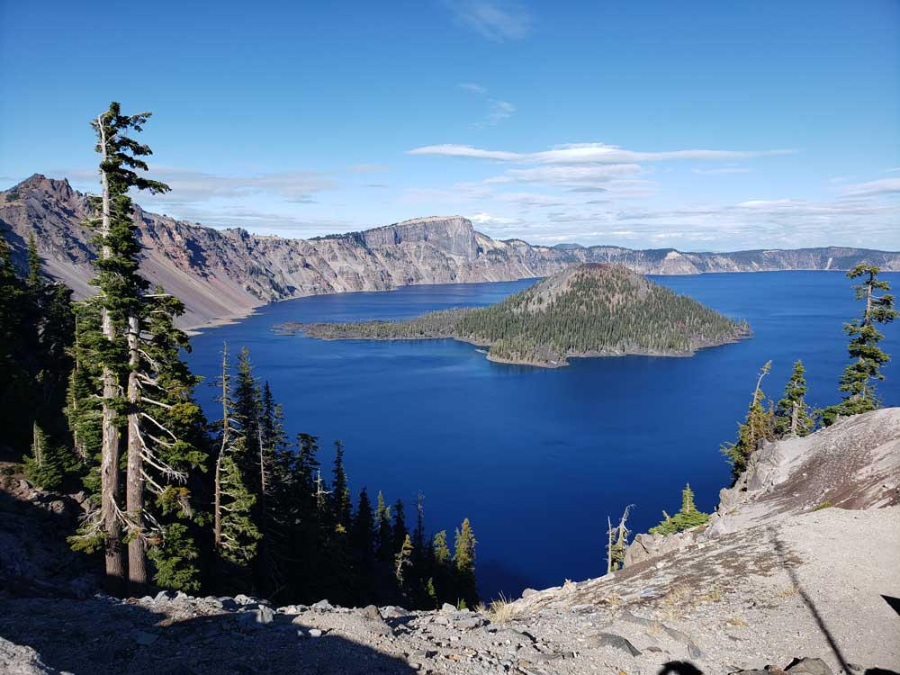
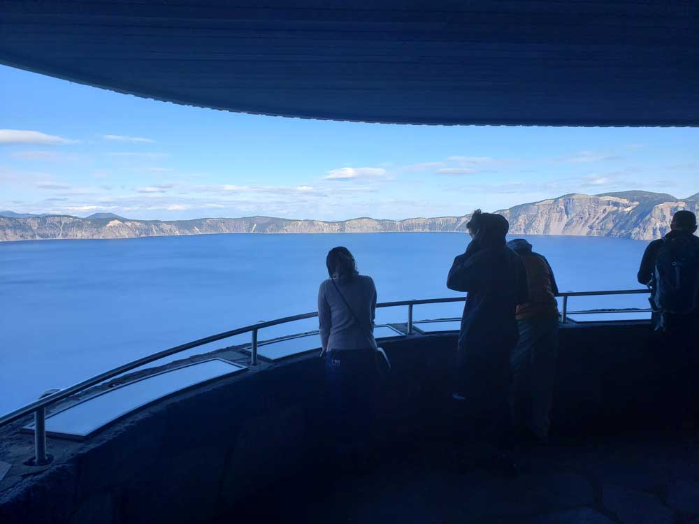
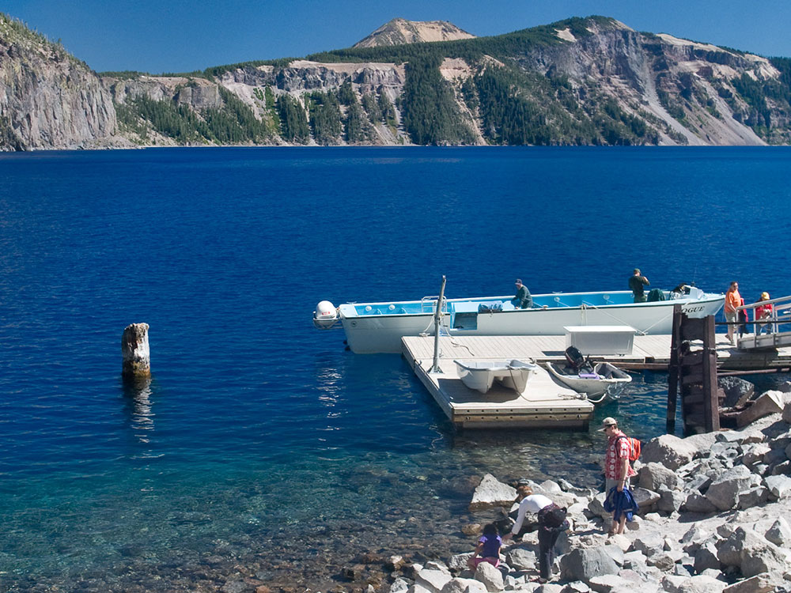
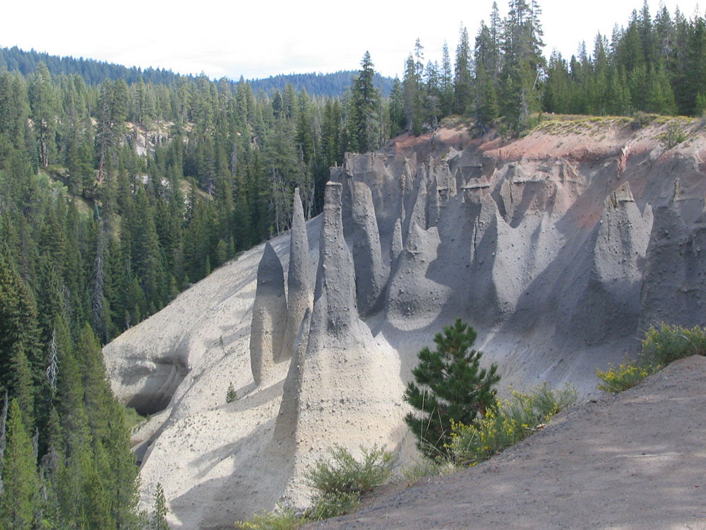
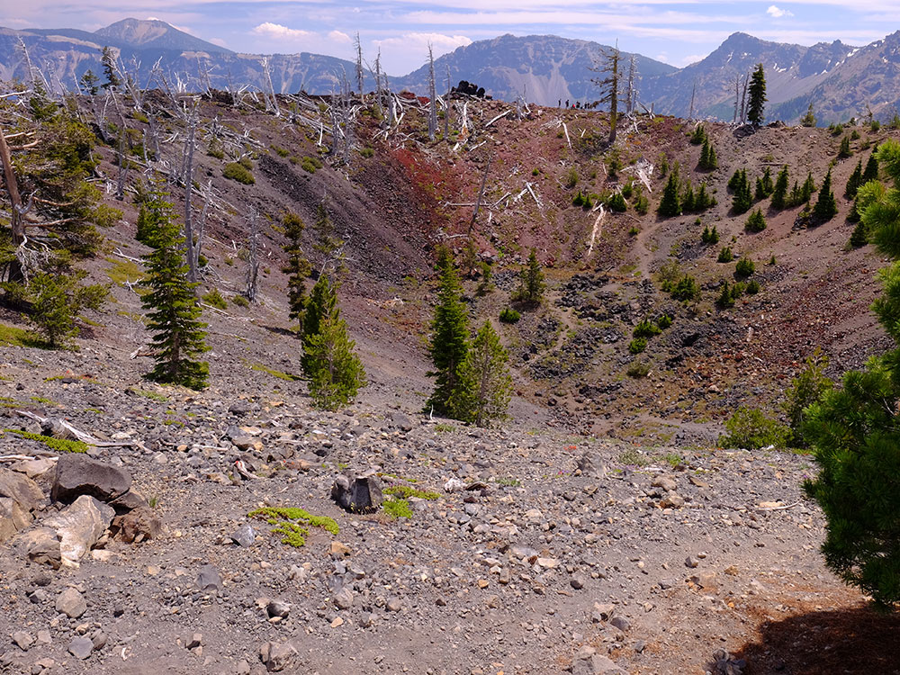

Crater Lake National Park Travel Guide
National park encompassing the caldera of Crater Lake, the deepest lake in the United States, the second-deepest in North America, and the surrounding hills and forests.
General Information
Accepts America The Beautiful Pass
The Godfrey Glen Trail (closed 2020 for repairs)
The Lady of the Woods Trail
The Grayback Drive
The Pacific Crest Trail (the official PCT, not the "alternate" PCT along the rim of the lake)
Pets are not allowed on other park trails or off-trail
From Medford (64mi) Head northwest on N Fir St toward W 5th St. Turn right onto W 4th St. Turn left onto N Riverside Ave. Use the right 2 lanes to turn right onto OR-62 E. Slight left onto Rogue Valley Express Way. Turn left onto OR-62 E. Turn right to stay on OR-62 E.
Overview
Crater Lake National Park in southern Oregon protects Crater Lake, the deepest lake in the United States at 1,943 feet, and one of the deepest in the world. The lake fills the caldera of Mount Mazama, a volcano that collapsed about 7,700 years ago after a huge eruption. Fed only by rain and snow, with no streams flowing in or out, the water is famously clear and deep blue, and cliffs 500 to 2,000 feet high surround it. Wizard Island, a cinder cone, rises from the lake, and the Phantom Ship is a rocky island that looks like a sailing ship.
Crater Lake was established as the nation's fifth national park in 1902, thanks to the efforts of William Gladstone Steel, who studied and promoted it for decades. The park covers 183,224 acres, and the rim rises to 7,000 to 8,000 feet. Visitors come to see the lake from the rim, drive the 33-mile Rim Drive, hike to viewpoints, take a boat tour to Wizard Island, swim in the cold water, and see heavy winter snow. The deep blue color of the lake, often described as unreal, is the main reason people come.
Park Sections
Most of the park's attractions are along the caldera rim and Rim Drive. Rim Village on the southwest rim is the main hub, with Crater Lake Lodge, the visitor center, a café, and Sinnott Memorial Overlook. Mazama Village, near the south entrance, has the campground, cabins, and a store. The north side of the rim has the Cleetwood Cove Trail, the only legal route to the water, and the eastern side has Cloudcap Overlook and the Pinnacles. The north entrance is closed in winter. A large part of the park is wilderness, accessible by trails including the Pacific Crest Trail.
Sightseeing and Exploring the Park
Rim Drive is the main attraction, a 33-mile loop with about 30 overlooks, including Discovery Point, where prospectors first saw the lake in 1853, Sinnott Memorial Overlook, Watchman Overlook, Cloudcap Overlook, the Phantom Ship Overlook, and the Pumice Castle Overlook. It usually takes two to three hours to drive with stops. The road is open fully from about July to October, depending on snow, and parts of it are closed for much of the year. Rim Village has easy walks and views, and the Crater Lake Trolley offers narrated rim tours in summer.
Hiking
The park has about 90 miles of trails. Easy walks include the Castle Crest Wildflower Trail (about 0.4 miles) and the short walk to Sinnott Memorial. The Watchman Peak Trail (1.6 miles round trip) leads to a fire lookout with a great view, and the Garfield Peak Trail (3.4 miles round trip) climbs above Rim Village. Mount Scott (5 miles round trip) reaches the highest point in the park at 8,929 feet. The Cleetwood Cove Trail (2.2 miles round trip) descends 700 feet to the lake and is steep on the way back. The Pacific Crest Trail crosses the park for 33 miles.
Other Activities
The park's signature activity is the boat tour of the lake, which leaves from Cleetwood Cove in summer and stops at Wizard Island, where visitors can hike to the summit of the cinder cone. Swimming is allowed from Cleetwood Cove and is very cold, usually 55 to 60 °F. Fishing is allowed without a license, and kokanee salmon and rainbow trout live in the lake. Ranger programs, stargazing, backcountry skiing, and winter snowshoe walks led by rangers are other options. The park has no cave tours.
Flora and Wildlife
The park's forests include mountain hemlock, red fir, lodgepole pine, whitebark pine, and Shasta red fir, with wildflowers blooming in meadows from July to August. Wildlife includes black bears, mule deer, elk, pikas, yellow-bellied marmots, and golden-mantled ground squirrels. Clark's nutcrackers and gray jays are common at the viewpoints, and bald eagles and peregrine falcons are seen over the lake. The Mazama newt lives in the lake, and some Pacific fishers live in the forest, though they are rarely seen. Viewing is on your own, and wildlife is easiest to see in early morning and evening.
Access
The park is in the Cascade Range of southern Oregon, reached from the south by Highway 62 from Medford (about 80 miles, 1.5 hours) and from the north by Highway 138 from Roseburg. Klamath Falls is about 60 miles south, Bend about 90 miles northeast, and Portland about 5 hours north. The nearest commercial airports are Rogue Valley International-Medford and Klamath Falls, with Redmond/Bend also an option. Visitors arrive by car, and there is no public transportation to the park. Highway 62 from the south is plowed in winter, but the north entrance and most of the Rim Drive are closed.
Seasons
Summer, from about July to September, is the best and busiest time, with the full Rim Drive open, boat tours running, and wildflowers in bloom. Mosquitoes can be thick in July, and wildfire smoke in late summer sometimes hides the view. Fall is quiet and cool, with the first snows by October. Winter is long and snowy, with an average of about 43 feet of snow, and the park is stunning for snowshoeing and skiing, but only the south entrance road and Rim Village are plowed. Spring is slow to arrive, and the Rim Drive and Cleetwood Cove trail usually open in late June or July.
Camping and Lodging
The park has two campgrounds: Mazama Campground, with about 200 sites, and Lost Creek Campground, with a small number of tent sites, both open in summer. The historic Crater Lake Lodge, built in 1915 at Rim Village, and The Cabins at Mazama Village are open from about mid-May to mid-October and fill early. Outside the park, lodging options include Union Creek Resort and the Prospect Historic Hotel on Highway 62, Diamond Lake Resort, about 30 minutes north of the north entrance, Fort Klamath, Klamath Falls, and the Rogue Valley around Medford, each 1 to 1.5 hours away.
Visitor Centers
The Steel Visitor Center near park headquarters at Munson Valley is open year-round and has exhibits, a film, a bookstore, and information. The Rim Visitor Center at Rim Village is open in summer and has a store and exhibits. Sinnott Memorial Overlook has ranger talks about the lake's geology in summer. Hours vary by season, so check the National Park Service website.
Highlights
- Rim Drive: a 33-mile loop with overlooks, usually fully open July to October
- Wizard Island: a cinder cone in the lake, reached by boat tour
- Cleetwood Cove Trail: the only trail to the water, a steep 1.1 miles each way, for swimming and boat tours
- Crater Lake Lodge: a historic lodge (1915) on the rim
- Winter: heavy snow, and skiing and snowshoeing on the rim; the North Entrance closes
This article uses material from the Wikipedia article "Crater Lake National Park", which is released under the Creative Commons Attribution-Share-Alike License 3.0. Additional information comes from the National Park Service Crater Lake National Park website.
Featured Locations

Castle Crest Wildflower Trail
Short interpretive loop through a spring-fed meadow and mixed conifer forest featuring one of the park's finest displays of summer wildflowers.
Short interpretive loop through a spring-fed meadow and mixed conifer forest featuring one of the park's finest displays of summer wildflowers.
Cleetwood Cove Trail
Steep lakeside trail providing the only legal access to the shoreline for swimming, fishing, and boat tours on the deep blue waters of Crater Lake.
Steep lakeside trail providing the only legal access to the shoreline for swimming, fishing, and boat tours on the deep blue waters of Crater Lake.
Discovery Point
Easy rim-side trail leading to a historic overlook with sweeping views of Crater Lake, Wizard Island, and the volcanic landscape that created the deepest lake in the United States.
Easy rim-side trail leading to a historic overlook with sweeping views of Crater Lake, Wizard Island, and the volcanic landscape that created the deepest lake in the United States.
Hillman Peak
Prominent volcanic summit on the caldera rim offering expansive views of Crater Lake, Wizard Island, and the rugged landscape formed by the collapse of Mount Mazama.
Prominent volcanic summit on the caldera rim offering expansive views of Crater Lake, Wizard Island, and the rugged landscape formed by the collapse of Mount Mazama.
Mount Scott Trail
Challenging summit hike leading to the highest point in the park, rewarded with panoramic views of Crater Lake, the Cascade Range, and surrounding volcanic landscapes.
Challenging summit hike leading to the highest point in the park, rewarded with panoramic views of Crater Lake, the Cascade Range, and surrounding volcanic landscapes.
Phantom Ship Overlook
Scenic roadside overlook offering one of the best views of a rugged volcanic island whose jagged silhouette resembles a ghostly sailing ship rising from Crater Lake.
Rim Drive, Crater Lake National Park
Historic rim drive includes 33-miles (53-km) of lake views, panoramic vistas, forests and meadows
Sinnott Memorial Overlook
Historic stone observation station built into the caldera wall, offering sheltered panoramic views of Crater Lake alongside exhibits explaining the dramatic volcanic events that formed the lake.
Skell Head Observation Point
Roadside observation point offering dramatic views of Crater Lake's deep-blue waters, steep caldera walls, and the rugged volcanic landscapes of the park's southeastern rim.
Steel Bay
Remote wilderness bay surrounded by dense boreal forest, rocky shoreline, and backcountry camping opportunities that showcase the solitude of Isle Royale.
Watchman Trail
Popular summit trail leading to a historic fire lookout with some of the park's finest panoramic views of Crater Lake, Wizard Island, and the surrounding Cascade Mountains.
Popular summit trail leading to a historic fire lookout with some of the park's finest panoramic views of Crater Lake, Wizard Island, and the surrounding Cascade Mountains.
Wizard Island
Volcanic cinder cone rising from the deep blue waters of Crater Lake, offering scenic boat-access hiking, dramatic caldera views, and a rare opportunity to explore within the lake itself.
Volcanic cinder cone rising from the deep blue waters of Crater Lake, offering scenic boat-access hiking, dramatic caldera views, and a rare opportunity to explore within the lake itself.




